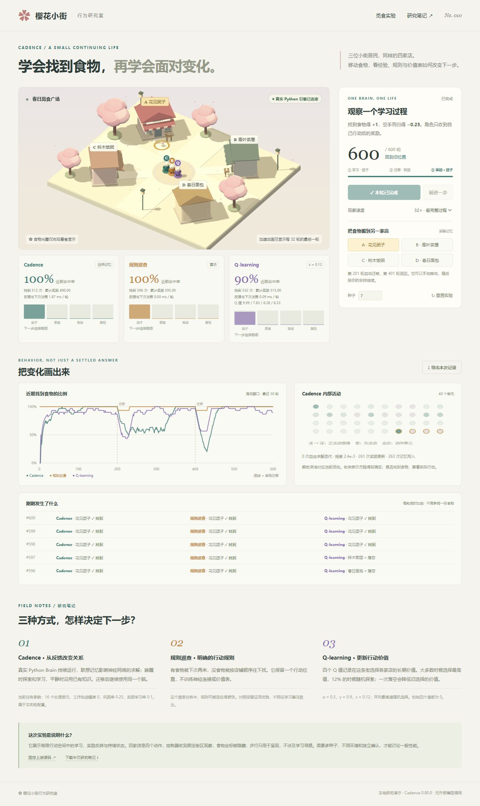

CADENCE / 理解、观察、比较
从一次反馈，读懂一个学习系统。
先分清它学什么，再看真实结果。
神经网络、规则与价值表，都接受同条件对照。
把讨论中的能力、原理、算法、使用场景和价值整理到同一个入口。NPC 用奖励学动作，捕鱼用真实轨迹学预测；EP 是参数学习机制，历史与操作是输入信息。无人机方案仍是建模分析。
四个真实演示入口
推荐顺序：四店反馈 → 街区记忆 → 算法内部 → 时序预测。演示需要本机 Python；讲解示意在指南中单独标注。
新增理解汇总 / 12 组机制 · 14 个场景
历史轨迹预测，只是其中一种用途
从业务问题进入：输入什么、输出什么、实际反馈怎样改变下次结果。详细地图把本地已测、上游机制和待验证业务分开，支持筛选、检索与五步闭环回看。
讨论整理 / 13 个章节
按问题阅读，不必先背算法名词
本机四种子 / 保留简单方法的优势
看过机制，还要看任务结果
| 觅食条件 | Cadence | 规则 | Q-learning |
|---|---|---|---|
| 四店即时奖励 · 2400 轮 | 86.71% | 99.33% | 88.00% |
| 街口线索 + 终点奖励 | 40.56% | 98.06% | 81.81% |
| 持续线索 + 终点奖励 | 71.94% | 98.06% | 81.81% |
| 街口线索 + 途中反馈 | 74.31% | 98.06% | 84.24% |
| 持续线索 + 途中反馈 | 75.21% | 98.06% | 84.24% |
街区每主条件 1440 趟，另有关闭工作轨迹对照；当前未测出总体优势，消融也未证明工作轨迹收益。看完整条件与判断 ↗
| 捕鱼四种子 · 每条件 192 条留出鱼 | Cadence | 关键对照 |
|---|---|---|
| 有惯性 · 平均轨迹误差 ADE | 未训练 75.57 → 17.72 px | 匀速 21.34、匀加速度 20.25 px |
| 有惯性 · 射击命中 | 189 / 192 | 匀加速度 190 / 192 |
| 独立随机 · 平均轨迹误差 ADE | 19.27 px | 无需训练的零位移参考 18.60 px |
这些是固定配置的开发实验，不是一般排名或独立确认。捕鱼误差与命中率不是同一指标；无人机没有实测，不能套用捕鱼成绩。怎样判断对自己的价值 ↗
原场景 · 四店即时奖励
可在本页直接开始。只反馈动作结果，食物坐标不传给控制器；角色步行是表现层。
春日觅食广场正在连接引擎…
BEHAVIOR, NOT JUST A SETTLED ANSWER
把变化画出来
近期找到食物的比例
滑动窗口 · 最近 30 轮● Cadence● 规则巡查● Q-learning虚线 = 食物迁移
Cadence 内部活动
—等待真实网络状态。
颜色深浅对应当前活动。收敛表示方程得到满足；是否找到食物，要看实际行动。
刚刚发生了什么
每轮同时比较 · 不竞争同一份食物开始后，这里会记录三位居民各自去了哪家店。
FIELD NOTES / 研究笔记
三种方式，怎样决定下一步？
Cadence · 从反馈改变关系
真实 Python Brain 持续运行，联想记忆影响神经网络的求解；唤醒时探索和学习，平静时沿用已有知识。迁移后继续使用同一个脑。
当前任务参数：16 个处理单元、工作轨迹幅度 0、巩固率 0.25、奖励学习率 0.1。属于本实验配置。
规则巡查 · 明确的行动规则
有食物就下次再来，没食物就按店铺顺序往下找。它保留一个行动位置，不训练神经连接或价值表。
这个简单任务中，规则可能适应得更快。对照保留这项优势，不预设学习算法胜出。
Q-learning · 更新行动价值
四个 Q 值记录在这条街选择各家店的长期价值。大多数时候选择最高值，12% 的时候随机探索；一次落空会降低旧选择的价值。
α = 0.3，γ = 0.9，ε = 0.12；并列最高值随机选择。初始四个值都为 0。
这次实验能说明什么？
它展示有限行动空间中的学习、奖励反转与持续状态。四家店是四个动作，控制器收到固定街区观察，食物坐标被隐藏；步行只用于呈现，不涉及学习寻路。需要多种子、不同环境和独立确认，才能讨论一般性能。
固定上游源码 ↗下载中文研究笔记 ↓完整资料 / 原文、数据、代码与实拍
研究资料库
按类型筛选或搜索文件。全文查看保留 Markdown／代码／JSON 原文；原始大数据按需读取，启动首页不加载全部轨迹。当前会话的最新记录请使用各演示的导出按钮。